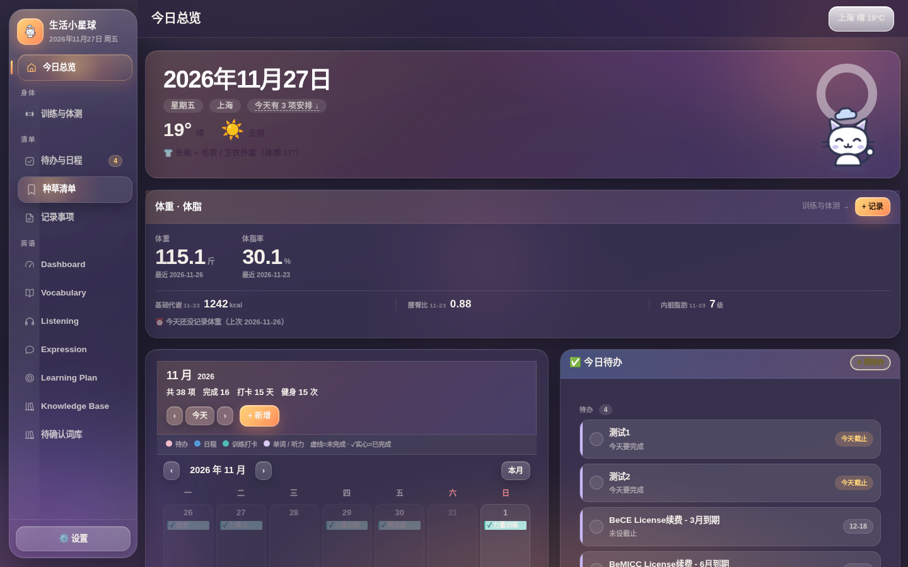
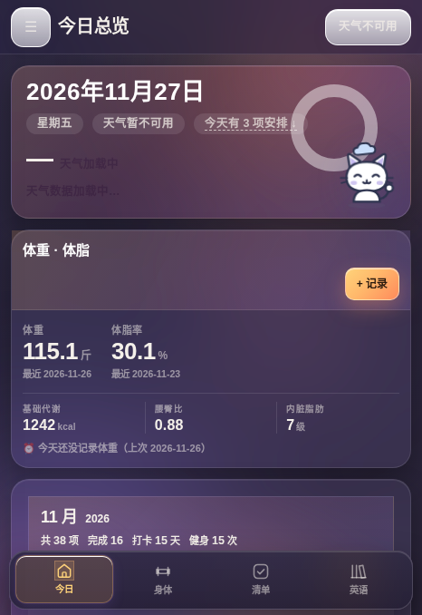

围绕「身体 · 成长 · 事务 · 种草清单」四件事的个人习惯系统。FastAPI + CSV 存储，零数据库依赖，暖夜玻璃暗色主题，桌面 / iPad / 折叠屏全适配。
在线应用需要带分享码访问；源码在 Releases 页可下载，本地一条命令启动。


日期 / 天气 / 今日体重 / 统一打卡日历 / 待办 / 各模块部件汇总到同一页。
训练安排（按星期循环）、力量 / 有氧打卡明细、体测记录与趋势图。
生词本（艾宾浩斯复习）、学新词、单词默写、会议精听、知识库、生词记忆库。
待办 / 日程、重复规则、优先级、浏览器桌面提醒，以及每日邮件日报。
拍照 / 上传图片、名称、价格、链接，按文件夹分类，种草中 / 已入手状态。
重要事项 / 灵感 / 备忘，分类 + 置顶。
git clone https://github.com/cbian0112-spec/MyManagement.git
cd MyManagement
pip3 install -r requirements.txt # 系统还需 poppler-utils（PDF 转图片用）
bash start.sh # 默认 8000 端口，PORT=9000 bash start.sh 可改所有数据明文存于 data/*.csv，首次启动自动创建空库，设置页支持一键导出 ZIP 迁移。